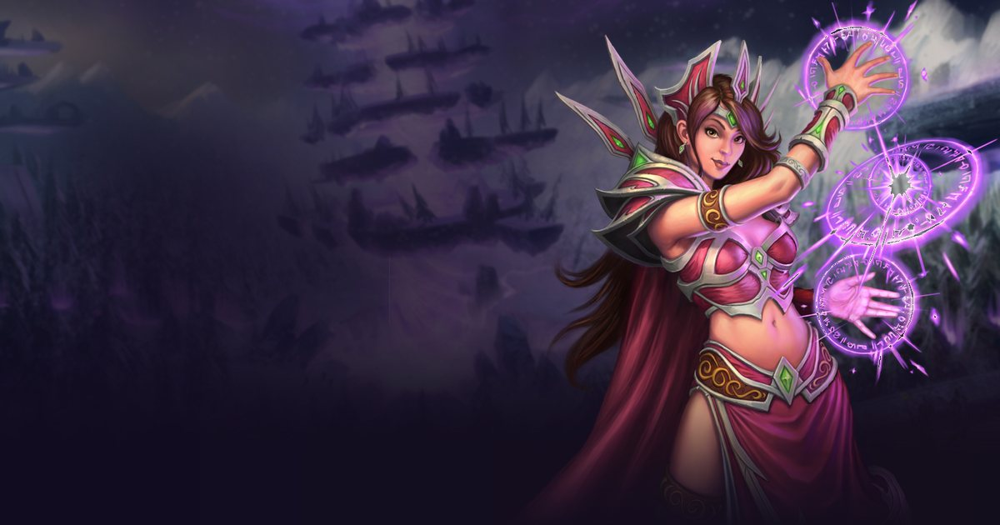

Givre est la spécialisation « DPS à distance » du Mage dans WoW: Forever. Cette page résume son arbre de talents tel qu'il figure dans le client bêta (build 1.60.1.70170) ; le rôle est celui indiqué par le guide Icy Veins de la spécialisation.

Les trois arbres de la classe, avec les talents du build niveau 60 (51 points) en couleur et tous les autres en grisé. Le chiffre à gauche de chaque ligne est le nombre de points à avoir dépensé dans l'arbre pour y accéder, et le badge de chaque talent donne les points investis. Cette section est figée : elle ne bouge pas et ne dépend pas du calculateur.
Build de notre simulateur niveau 60 (51 points), celui utilisé pour le classement : talents choisis, équipement et rotation sur la page du classement.
Équipement, rotation et dégâts par technique de ce build au niveau 60 : Mage Givre →
Rang 5/5 : Réduit le temps d’incantation de votre sort Éclair de givre de 0,5 s.
Rang 5/5 : Améliore de 5 % vos chances de toucher avec les sorts de feu et de givre.
Rang 5/5 : Augmente de 100% les points de dégâts supplémentaires infligés par les coups critiques de vos sorts de Givre.
Rang 3/3 : Augmente les points de dégâts infligés par vos sorts de Givre de 6%.
Rang 3/3 : Réduit de 15% le coût en mana de vos sorts de Givre, et réduit de 30% la menace qu'ils génèrent.
Rang 1/1 : Inflige 28 points de dégâts de givre à une cible ennemie. Inflige 300 % de dégâts de givre supplémentaires aux cibles gelées.
Rang 3/3 : Augmente de 50 % les chances de coup critique de tous vos sorts contre les cibles gelées.
Rang 2/2 : Donne à vos effets d’engourdissement 15 % de chances de déclencher l’effet Doigts de givre, qui permet à 2 prochains sorts d’agir comme si la cible était gelée. Dure 15 s.
Rang 5/5 : Confère à vos sorts de givre 100 % de chances d’appliquer l’effet Froid de l’hiver, qui augmente de 2 % les chances que vos sorts Javelot de glace et Éclair de givre infligent un coup critique à la cible pendant 15 s. Cumulable jusqu’à 5 fois.
Rang 1/2 : Augmente de 13% les points de dégâts que vous infligez avec une Baguette.
Rang 5/5 : Améliore de 5 % vos chances de toucher avec les sorts des arcanes.
Rang 2/2 : Réduit de 15 la résistance de votre cible à tous les types de magie, et diminue de 30% la menace générée par vos sorts d'Arcanes.
Rang 5/5 : Vous confère 10 % de chances d’entrer dans un état d’Idées claires après qu’un sort de dégâts a touché une cible. L’état d’Idées claires réduit de 100 % le coût en mana de votre prochain sort de dégâts.
Rang 3/3 : Augmente de 6 % les chances de coup critique de vos sorts des arcanes.
Rang 3/3 : Vous confère 50% de votre vitesse de récupération du mana normale pendant l'incantation.
Priorité de notre simulateur au niveau 60, comparée à ce que recommande Icy Veins. Leurs guides sont écrits pour la bêta niveau 30 et pour la montée en niveau : nous gardons ce sur quoi tout le monde s'accorde, nous adoptons ce que la simulation a confirmé au niveau 60 et nous disons où les deux diffèrent.
D'accord : Frostbolt en continu et Ice Lance sur cible gelée. Frost Nova est un outil de contrôle, pas simulé.
Mesurée par le simulateur sur le personnage ci-dessus : le DPS gagné par un point supplémentaire de chaque statistique, avec les mêmes tirages aléatoires de chaque côté. La valeur relative compare chaque statistique à un point de puissance des sorts. Critique, toucher et hâte sont comptés par point de score, comme la Force ou l'Agilité, pour être comparables ; ils tiennent compte des plafonds : un toucher au plafond ne rapporte plus rien. Une valeur proche de zéro ou négative est dans la marge d'erreur ou liée à une limite (mana, plafond).
| Statistique | DPS gagné | Valeur relative | |
|---|---|---|---|
| Toucher par point de score | 0.776 | 1.64 | |
| Hâte par point de score | 0.5 | 1.06 | |
| Puissance des sorts par point | 0.472 | 1.0 | |
| Critique par point de score | 0.332 | 0.7 | |
| Intelligence par point | 0.07 | 0.15 | |
| Force par point | 0.0 | aucun effet | |
| Agilité par point | 0.0 | aucun effet | |
| Esprit par point | -0.053 | -0.11 |
DPS gagné quand on ajoute des points de chaque statistique par-dessus l'équipement simulé. Cliquez sur une statistique (ou sur sa ligne dans le tableau) pour mettre sa courbe en avant ; le rond marque le plafond estimé, après lequel chaque point rapporte moins de 20 % de ce qu'il rapportait au départ.
Les trois meilleurs de chaque catégorie, mesurés par le simulateur sur le personnage ci-dessus. On ne porte qu'un parchemin et qu'un élixir ou flacon à la fois : chaque gain est le DPS apporté par ce consommable seul, par rapport à un emplacement vide, le reste du lot restant identique. Les gains d'une même catégorie ne s'additionnent donc pas. La ligne marquée d'un point est celle du lot simulé.
| Consommable | DPS | Gain |
|---|---|---|
| Parchemin d'intelligence ● | +1,3 | +0,2 % |
| Consommable | DPS | Gain |
|---|---|---|
| Flacon de connaissance ancienne ● | +85,0 | +15,5 % |
| Élixir du seigneur mage | +18,9 | +3,5 % |
| Élixir des arcanes supérieur | +16,5 | +3,0 % |
| Consommable | DPS | Gain |
|---|---|---|
| Huile de sorcier brillante ● | +21,5 | +3,5 % |
| Plat (puissance des sorts) ● | +11,8 | +1,9 % |
| Huile de mana brillante | +9,8 | +1,6 % |
L'équipement que notre optimiseur retient pour cette spécialisation parmi les objets connus de la bêta (donjons, rares objets de raid déjà connus et équipement fabriqué par les métiers, que l'on peut acheter ou se faire fabriquer : prix et matériaux ne sont pas pris en compte), avec les effets d'objets simulés. Aucun objet n'est choisi à la main : c'est le résultat du calcul du classement, et il changera quand de nouveaux objets seront découverts.
Enchantements jusqu'au niveau 300 de métier, valorisés par le simulateur quand ils donnent une statistique ou des dégâts d'arme fixes. Le personnage n'a pas besoin du métier : on les achète ou on se les fait poser par un enchanteur ; les renforts d'armure du Travail du cuir (torse, jambes, pieds, mains) et les lunettes de l'Ingénierie sont comptés aussi. Un renfort et un enchantement occupent le même emplacement permanent : une pièce porte l'un ou l'autre, et les jambes, qui n'ont pas d'enchantement, reçoivent le renfort ; les enchantements qui déclenchent un sort (Crusader, Fiery Weapon...) et les dégâts d'école ne sont pas simulés. Il n'existe aucun enchantement d'anneau dans les données de la bêta jusqu'au niveau 300 de métier.
Guide Icy Veins daté du 2026-10-02, lu le 21 septembre 2026.
Ce sont les talents les plus profonds de l'arbre : ils demandent d'avoir déjà investi 30 points dans la spécialisation. Textes officiels du jeu, au rang maximum.
Vous protège instantanément à l’aide d’un bouclier magique qui absorbe 431 points de dégâts. Dure 1 min. Tant que le bouclier est actif, les incantations de sorts ne peuvent pas être interrompues ou retardées par les dégâts subis.
Ouvrir Mage dans le calculateur de talents
Répartissez vos 51 points, comparez les trois spécialisations et partagez votre build par lien.
Les données de talents viennent du client bêta. Le build, l'équipement, les statistiques et la rotation niveau 60 viennent de notre simulateur et sont validés par des mesures de DPS ; la rotation est comparée à celle des guides Icy Veins, écrits pour la bêta niveau 30. Les soins ne sont pas simulés. Ces données évolueront avec la bêta et avec la sortie du jeu le 4 novembre 2026.